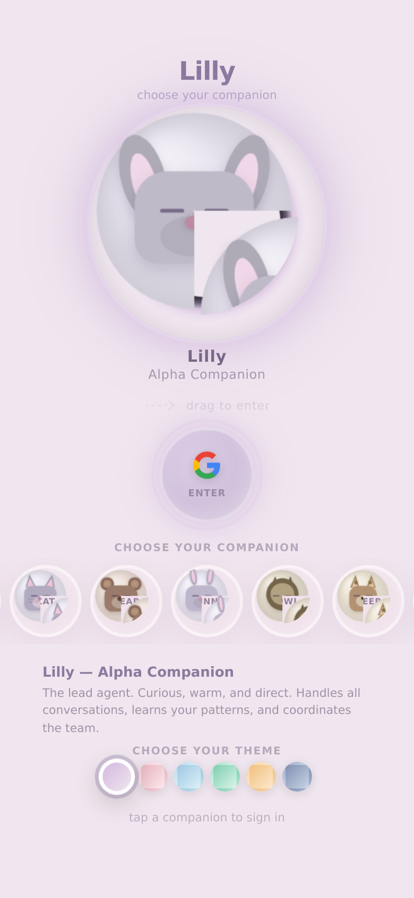
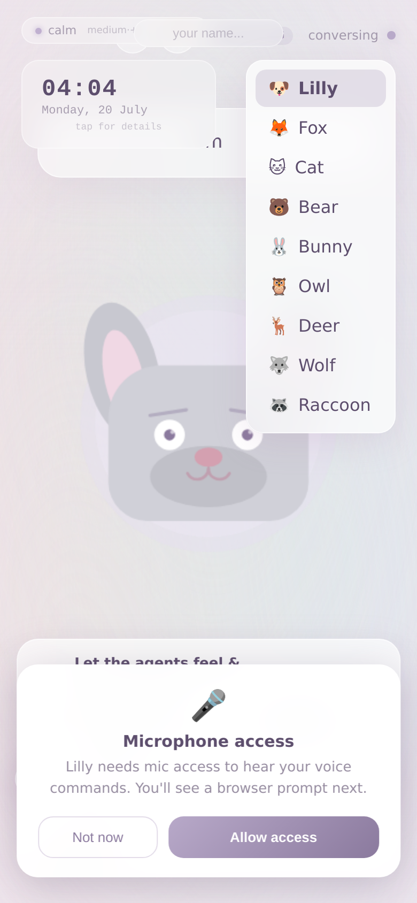

A guided walkthrough of the avatar + overlay + PiP experience
Step 1 of 9
1
Open Lily in Browser
Landing page — pick your companion

Open http://your-server:8098 on your phone browser. The 9-character hive mind wheel appears — drag any avatar into the center sphere to select them. Lily (puppy) is the default.
Type "what do you sense?" or speak "Hey Lilly, what's happening around us?". The avatar replies with real sensor data — light level, motion, nearby Bluetooth devices, weather pressure trend, and pending notifications — all gathered from your phone via the sensor server.
Say "open camera". The camera app opens in Picture-in-Picture mode — a small floating viewfinder stays on screen while the avatar chat remains fully visible and interactive behind it. You can reposition the PiP window by dragging.
While the camera is open in PiP, say "what do you see?". The browser sends a camera frame to POST /api/vision/browser, YOLOv8 detects objects (person, laptop, phone, cup, chair, etc.), and the avatar describes the scene: "I see you at your desk with your laptop and a coffee mug — looks like you're working!"
Say "where can I find a good Pho?". The avatar launches Google Maps in half-screen overlay mode with geo:0,0?q=pho. Maps fills the right side while the avatar chat stays visible on the left. You can see search results and keep talking to the avatar about them — "What's the rating on that first one?", "Navigate there", "Any other pho places nearby?"
OS first, then app priority — with next-step suggestions

The avatar monitors notifications every 3 seconds and alerts you by priority:
Tier 1 — OS: Phone calls, SMS, system alerts Tier 2 — Apps: max > high > default > low > min
Each alert includes a contextual next-step suggestion: "Missed call from Mom — want me to call them back?" "New email from John about Project — want me to read it?" "SMS from Sarah — want me to reply?"
Say "what notifications" or "what did I miss" to see all active notifications sorted by priority.
When you want the overlaid app to take the whole screen, say "go full screen" or "maximize". The app is re-launched without freeform bounds, expanding to fill the display. To return to the avatar, say "go home" — the avatar is still there, ready to chat.
Say "open youtube" to play videos in Picture-in-Picture — the video floats while you chat. Meanwhile, sensor-triggered skills fire automatically:
"It's gotten really dark in here. Should I turn on a light?" — fires when light < 10 lux "I felt you pick up the phone! What's up?" — fires on pickup sensor "Feels like we're moving fast! Are we in a car?" — fires on significant motion
All skills are configurable in sensor_skills.json or via GET/POST/DELETE /api/sensor_skills.
These screenshots were generated by automate_demo.sh
— it orchestrates the phone via the sensor server's /shell endpoint, launches each app,
waits for the UI, and captures frames with screencap. To run it on your phone:
# Make sure sensor server is running on your phone
# Then from the avatar server:
bash automate_demo.sh
Replace the generated screenshots with higher-quality captures from your phone's screen recorder
by overwriting the PNGs in the screenshots/ directory.